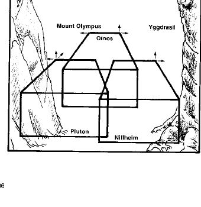

哈迪斯 · Hades
哈迪斯是介于秩序与混乱之间的邪恶位面，灰色、荒凉而缺乏情感。三层奥伊诺斯（Oinos）、尼弗海姆（Niflheim）和冥河之境普路托（Pluto）都没有真正的太阳或月亮；颜色会逐渐褪成黑白，旅行者的意志和记忆也会随时间消沉。
奥伊诺斯拥有疾病、沼泽和低矮恶魔；尼弗海姆由寒冷森林、雾和北欧死者组成；普路托则是最接近冥界的层，包含冥王、冥河、世界树和通往奥林匹斯山的路径。斯提克斯河、世界树和奥林匹斯山都可在哈迪斯的不同层找到。

哈迪斯的居民包括奥诺斯、尼弗海姆的亡者、普路托的恶魔与冥界守卫。旅行者若在此停留过久，会变得冷漠、悲观并失去离开的愿望；地下城主可用逐渐降低的士气、记忆和阵营热情表现位面的影响。